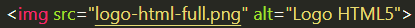
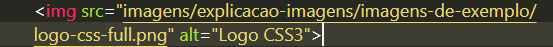

Para adicionarmos uma imagem ao site, usamos a tag <img> que não precisará ser fechada com /img
Exemplo:
Assim que criamos a tag img, devemos utilizar em seguida o src=""(seria o source, mostrar de onde ela vem). E assim que indicamos de onde vem o src utilizamos a tag alt=""(seria a legenda da foto no HTML).
Podemos também carregar imagens que estão em sub-pastas. Para isso, todas as imagens dem estar dentro da pasta principal ou em outra pasta dentro da principal.
Exemplo:
Também podemos carregar imagens externas, de fora do computador, da internet e etc.
Exemplo: